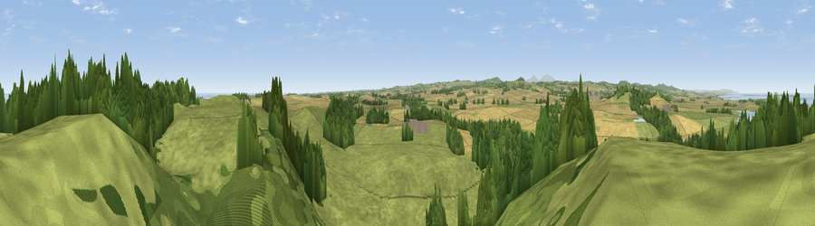

Viewpoint near Bamburgh
#7705 in England · top 37% of its area beats it · near BamburghWhere it is
The exact computed spot (NU 15225 33875). Click the marker for map links.
The view, rendered

A 360° render of this exact spot computed from the terrain model, tree cover and land cover — summer colours, afternoon light, calibrated against photographs of famous viewpoints. Real trees, hedges and buildings will differ in detail.
The panorama
Grey silhouette: terrain skyline in each direction (720 bearings, Earth curvature and refraction included). Dashed green: skyline with trees (+15 m) and buildings (+8 m) as obstacles. Blue strip: how far the ground is visible on each bearing.
Where the view opens
Wedge length = distance to the farthest visible ground on that bearing (vegetation-aware). Rings at 10, 25 and 50 km.
What fills the view
58% grassland · 20% woodland · 16% cropland · 5% water
Angular shares of the visible panorama (visual magnitude), not map area. Landscape diversity 0.49 (0–1 Shannon).
Key numbers
More beautiful places nearby
The staircase of upgrades: each row has a higher view potential than everything closer. Driving times are estimates from straight-line distance, calibrated against real road routing — check an actual route before setting out.
| Place | Direction | Drive | Score |
|---|---|---|---|
| Brada Hill | E · 1 km | ~3 min | 69.3 |
| Viewpoint near Bamburgh | NE · 2 km | ~5 min | 71.3 |
| Viewpoint near Belford | W · 2 km | ~5 min | 72.3 |
| Viewpoint near Bamburgh | NE · 2 km | ~6 min | 77.2 |
| Viewpoint near Warenford | SW · 5 km | ~10 min | 77.3 |
| Viewpoint near Belford | W · 8 km | ~16 min | 81.2 |
| Viewpoint near Belford | W · 9 km | ~17 min | 81.3 |
| Viewpoint near Fenwick | W · 9 km | ~18 min | 82.5 |
55.59826, -1.75995 · source: screening · position refined by local search. Computed location — check access rights before visiting.